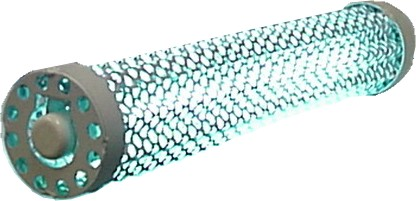

Chinese Government Approves RGF's PHI Cell to Reduce Airborne Transmission of SARS
Release date: June 27, 2003
Contact: Public Relations Dept.
As reported by Fox News & TV12- A CBS
Affiliate on
West Palm Beach, FL – June 27, 2003 – Ronald G. Fink, President and CEO of RGF Environmental Group announced the approval of RGF’s proprietary Photohydroionization2 Cell, an air purification device utilizing advanced oxidation to destroy airborne bacteria, viruses, VOC’s (chemicals), smoke, mold and odors. The approval by the Chinese Central Government (SARS Task Force) comes after months of lab tests by the government and 150 test sites in the Shanghai Subway System.
This project is part of the Government program to eliminate SARS and has been widely covered by China's TV News. RGF is currently processing the first order. The Chinese plan is to install RGF’s proprietary Photohydroionization2 Cell in all the ventilation, heating, and air conditioning systems of Government and public buildings, subways, airports, etc.
The technology used in the PHI2Cell™ is a high-intensity, broad spectrum UV light targeted on a hydrated metallic compound target, which creates an advanced oxidation atmosphere.
Note: The RGF PHI2Cell™ is not a medical device. RGF has not tested this unit on any specific disease. Independent testing has been performed on airborne microbials and reductions have exceeded 90%. RGF also has independent tests on airborne mold, odors, VOC's, etc.
RGF Environmental Group was founded in 1985 for the purpose of providing the world with the safest and purest water, air and food without the use of chemicals. RGF manufactures air, water and food purification systems utilizing their photohydroionization technology.

PHI2-Cell™
For even more information, visit their website at: www.rfg.com